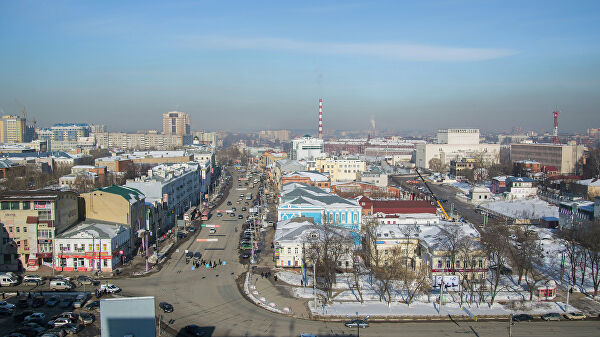
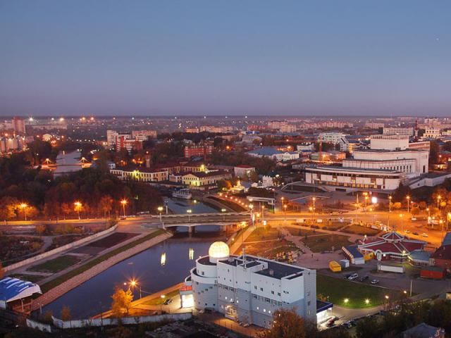

Иваново
 
Иваново у большинства россиян ассоциируется с текстильной промышленностью. Его называют «Городом невест» и «Ситцевой столицей», «Родиной Первого Совета» и «Русским Манчестером», но лучшие достопримечательности Иваново не известны так широко, как его промышленность. Тем не менее прогуливаться по городу с туристическими целями так же интересно, как и осуществлять здесь покупки на текстильных предприятиях.
Иваново, несмотря на молодой официальный возраст, имеет насыщенную историю. Это самый молодой город, включенный в маршрут «Золотое кольцо». Тихий город на реке Уводь образовался в XIX веке путем слияния села Иваново, которое издавна славилось как центр обработки льна, с Вознесенским посадом. До 1932 года город именовался как Иваново-Вознесенск. Но село Иваново имеет многовековую историю — по археологическим исследованиям, населенный пункт был здесь еще в XV веке. Тогда центром города было место, на котором сейчас располагается площадь Революции.
Достопримечательности

Площадь Революции
Центральная площадь города в дореволюционные годы сменила несколько названий: Георгиевская, Городская. В XX веке площадь была местом кровавых событий. В 1915 году здесь проходила демонстрация местных жителей против участия в Первой мировой войне. Власти города жестко подавили выступление горожан — в результате погибло более сотни человек. На площади Революции располагается Памятник борцам революции 1905 года. За памятником разбит сквер. Недавно на площади была возведена небольшая церковь — Иконы Божией Матери.


Щудровская палатка
Щудровская палатка была построена в XVII веке. Памятник каменной гражданской архитектуры XVII века — это бывшая приказная изба для сельских глав. Владельцем дома в XIX веке стал купец Щудров, так достопримечательность и получила свое настоящее название. Южный фасад, который являлся главным, богато декорирован. Окна украшены фигурными наличниками. Внутри — две комнаты: большая и малая. Сейчас в них проходят выставки.

Церковь Троицы Живоначальной
Это новый храм, построенный в 2000 году в древнерусском стиле: компактное белокаменное строение с одноглавым куполом и узкими оконными проемами. За образец был взят Троицкий храм в Сергиевом Посаде.В летописях 1632 года встречается упоминание о небольшой деревянной церкви во имя Троицы. Тогда она находилась в стенах Покровского мужского монастыря. В XIX веке деревянную церковь перенесли в Успенский погост, а на ее месте построили каменный храм.

Площадь Пушкина
Троицкая церковь находится у площади Пушкина. Также, как и площадь Революции, это место в советское время совершенно поменяло облик — были уничтожены храмы (для строительства Дворца искусств). Сейчас, помимо похожего на мавзолей Дворца искусств, на площади располагаются фонтан, развлекательный центр «Колизей» и ресторан. Слева от площади находится мемориальный камень Пушкину.

Дом-подкова
Важными достопримечательностями Иваново считаются постройки эпохи конструктивизма. Жилой дом-подкова является архитектурным памятником. Дом на 104 квартиры был построен в 30-е годы XX века в виде полукруга. Причем, это не было государственным заказом — от архитекторов требовалось сделать 6-этажный дом как можно более компактным. Дом строился для работников НКВД, КГБ и ОГПУ. По городской легенде, дом-подкова имеет подземный ход в дом-пулю — еще один архитектурный памятник той эпохи, в настоящее время находящийся в руинированном состоянии после пожара 2008 года.

Дом-корабль
Жилой дом в виде корабля из двух корпусов был построен в 1929–30 годах. Первый корпус был построен для номенклатуры, второй — для рабочих, за что он получил название «баржа». Облик главного корпуса действительно похож на корабль: скошенный торец со скругленной стеной — нос судна; восьмиэтажная башня — корма; балконные галереи по всему фасаду — палубы; остекленный первый этаж — водная гладь. К сожалению, сейчас оба корпуса находятся в обветшалом состоянии.

Храм Вознесения Господня
Ранее на этом месте располагался красивейший храм города — Вознесенская церковь в русско-византийском стиле. Она была построена в 1851 году по заказу ивановских фабрикантов. В 1929 году церковь была разрушена советскими властями. В новом веке утраченный храм решили воссоздать, но уже на новом месте. Первые богослужения в храме Вознесения Господня прошли в 2018 году. Новый храм был построен в другом стиле — древнерусского зодчества: крестово-купольный тип строения с высокими узкими окнами и золотыми куполами. На крыше храма планируется открытие смотровой площадки.

Введенский женский монастырь
Введенский женский монастырь был основан в 90-е годы, но быстро стал одной из визитных карточек города. К монастырю примыкает церковь в честь Введения Богородицы, построенная в начале XX века на средства главы города. В советский период внутри краснокирпичного памятника архитектуры располагался архив КГБ.Место возведения женской православной обители уникально само по себе. Вблизи него воздвигнута еще одна святыня — церковь Введения Пресвятой Богородицы.

Усадьба Дюрингера
Построенный в начале XX века для швейцарца Дюрингера дом выглядит как строение из Западной Европы: в облике преобладает стиль модерн, но также встречаются элементы эпохи Ренессанса. Основной дом усадьбы с угловой башней и островерхими крышами похож на готический замок. По легенде, хозяин дома был сказочно богат и где-то на территории усадьбы до сих пор хранятся его сокровища. В советское время усадьбу национализировали. Дом и сейчас остается жилым — внутрь попасть не удастся.

Церковь Преображения Господня
Преображенский храм — одно из немногих уцелевших религиозных строений в Иваново. Храм был построен в конце XIX века. Автором проекта выступил А. С. Каминский — архитектор первого здания Третьяковской галереи. Внешний декор имитировал русский стиль XVII века с богатым украшением фасадов. Собор продолжал функционировать до 1940 года, но в военные годы был закрыт. Службы возобновились в 1944 году. На протяжении долгих лет Преображенский собор был единственным действующим храмом всего региона.
Музеи

Музей ивановского ситца
Относительно новый для города музей (он открылся в 1987 году) знакомит гостей города с этапами производства и самыми яркими образцами текстильной промышленности Иваново. Музей располагается в здании конца XIX века, принадлежавшем фабриканту Бурылину. Внутри частично сохранено старинное убранство: богатый декор и витражи. Основа экспозиции — богатая коллекция Бурылина: предметы из разных эпох, связанные с производством тканей; старинная одежда.

Ивановский художественный музей
Музей изобразительного искусства был открыт в середине XX века. В двухэтажном особняке XIX века размещаются коллекции русского и зарубежного искусства. Основная часть экспозиции — русское искусство XVIII–XX веков: живопись и графика, скульптура и фарфоровые изделия, серебряные изделия и резная кость. Здесь экспонируются работы известных художников. Также представлены предметы искусства Древнего мира и Западной Европы.

Музей промышленности и искусства
Музей был основан меценатом и фабрикантом Бурылиным в 1914 году. В массивном здании неоклассического стиля располагаются коллекции предметов декоративно-прикладного искусства и нумизматики, оружие, книги и посуда. В коллекции оружия представлены экземпляры холодного оружия XIV–XV веков; в отделе декоративно-прикладного искусства — картины местных фабрикантов. «Золотая кладовая» содержит коллекцию церковной атрибутики и медалей. Также есть небольшая экспозиция, посвященная природе Ивановской области.

Музей первого Совета
Иваново был одним из первых провинциальных городов, в котором начались митинги и стачки рабочих. Чтобы устроить переговоры с рабочими, в городе был основан первый в императорской России Совет рабочих депутатов. Музей был открыт в первом доме, где проходили заседания Совета. Внутри здания мещанской управы восстановлена обстановка тех лет, экспонируются документы и фотографии, организуются выставки, посвященные советской эпохе. Людям, не заставшим эпоху СССР, будет интересная экспозиция «Коммунизм+коммуна=коммуналка» с советскими интерьерами коммунальной квартиры.

Музей советского автопрома
Необычный музей был основан в 90-е годы на базе Ивановского опытно-экспериментального авторемонтного завода. В экспозиции представлены все модели «Волги» (в том числе шпионская «Волга» для КГБ), разнообразные «ГАЗы» и «ЗИЛы», а также 2 «Чайки». Есть несколько уникальных, единственных в своем роде экспонатов. Примечателен тот факт, что все автомобили находятся в рабочем состоянии.